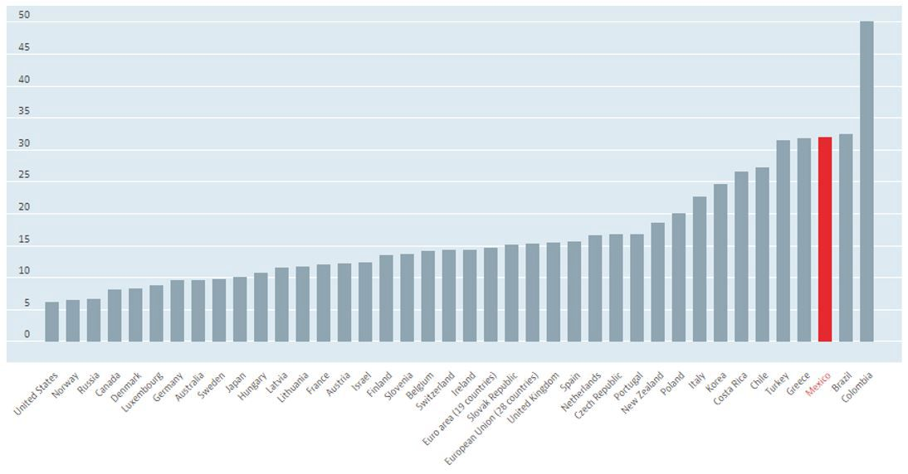
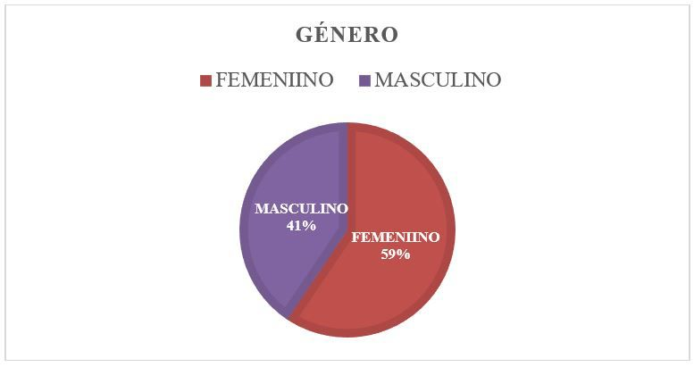
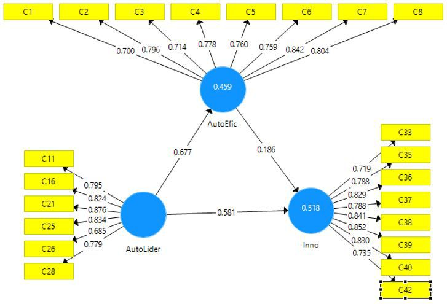
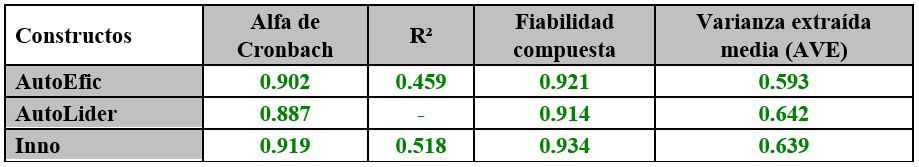
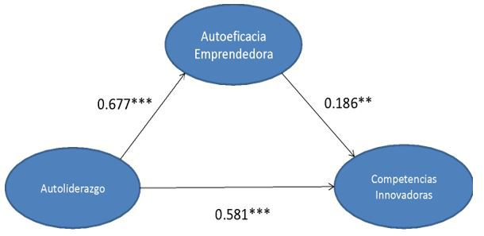

Introducción
En la actualidad, la revelación de las generaciones ha sido propósito de estudio desde hace décadas por
numerosos
autores y disciplinas, no hay consenso en torno a su definición, elementos determinantes ni a las conductas
coligadas a
los conjuntos generacionales [1], lo antepuesto permitió observar que hoy en día los millennials están por
ser rebasados
por la generación Centennials, los recientes estudiantes, que se encuentran estudiando el nivel
universitario, pertenecen
a la generación Z, los llamados Centennials; individuos nacidos del 1996 hasta el año 2010; calificados como
nativos
digitales, estos nacieron con la tecnología [2]. Esta generación, manifiesta un reto en el nivel de
educación superior,
por sus integrantes que se encuentran en los recintos universitarios [3]. En Colombia, esta es la generación
que está
ingresando actualmente a la fuerza laboral mundialmente, esta generación ha sido diferente a cualquier otra
debido a
la tecnología avance que se ha logrado en las últimas tres décadas. Estos avances tecnológicos incluyen
electrónica dispositivos de comunicación (TV, computadoras, teléfonos celulares, tabletas, etc.) y
desarrollo informático que esté
relacionado con comunicación (redes sociales, compras online, banca electrónica, etc.) Adicionalmente, la
Generación
Z es considerada como propia a la altura global, esto propicia que las diferencias particulares de las
sociedades que
habitan en el mundo no sean tan variadas al resto de las generaciones [4].
Emprendimiento e Innovación
En el presente, el desarrollo económico de naciones y territorios corresponde a un sinfín de elementos con
el
emprendimiento. El cual, es una de las funciones humanas más complicadas ya que se unen los constituyentes
sociopersonales, cognitivos, económicos, políticos y culturales, que al fusionarse podrían trascender como
predictores
eficaces de iniciativas de emprendimiento o de la intención emprendedora en los sujetos [5]. El emprendedor
es un
innovador, un estratega, un creativo y alguien que cree en sus ideas para llevarlas a cabo de forma exitosa
[6].
El trabajo por cuenta propia se define como trabajadores que trabajan por cuenta propia, miembros de
asociaciones
de productores y empleados familiares no remunerados. Siendo estos, no remunerados en el jucio de que
carecen de
un contrato formal para cobrar una cantidad fija de ingresos, sin embargo comparten los ingresos producidos
por la
compañia. Los empleados familiares no remunerados son especificamente importantes en el area de la
agricultura
y el comercio minorista. Todos los individuos que trabajan en compañias corporativas, incluso los directores
de las
compañias, se califican como empleados. El trabajo por cuenta propia se observa como una táctica de
supervivencia
para quienes no pueden hallar ningún otro medio de ingresos, también se le describe como una demostración
del
espíritu emprendedor y el deseo de ser tu propio jefe. Este indicador se mide como porcentaje de la
población ocupada
considerada (total, hombres o mujeres), en Colombia es de 50.1% (Gráfica 1).

Grafica I. OCDE: Tasa de autoempleo por país, Total % de empleo 2019.
Fuente: [7]
La innovación estimula la productividad al encontrar e implementar formas más eficientes de utilización del
capital físico
y humano existente; es uno de los conceptos actuales en la gestión empresarial. Obteniendo una ventaja
competitiva
porque, es un componente intangible que es difícil de imitar entre los competidores [8]. En momentos de
crisis como
el actual, muchas cabezas se vuelven hacia la capacidad de innovación, se toma como principal factor de
mejorar la
productividad o eficiencia para las empresas [9], la calidad de los productos y costos de producción
decrecientes o
incluso el tiempo de fabricación [10]. Existe aún una brecha de investigación en la bibliografía académica
relacionada
con la capacidad de innovación de una persona, el cómo medirlo y como desarrollarlo [11]. En este trabajo se
revisara tres conceptos: el primero es la capacidad de innovación, la autoeficacia en una persona,
propondremos tres
dimensiones para medir las en un cuestionario con estudiantes de la Universidad Fundación de Estudios
Superiores Comfanorte, para posteriormente contribuir que reactivos satisfacen la necesidad en la
investigación.
Liderazgo y Autoeficacia emprendedora
El entorno laboral está sufriendo grandes y complejos cambios, ocasionados principalmente por diversos
factores
socioeconómicos y psicosociales; el mayor impacto en el mercado viene ocasionado por la innovación
tecnológica, lo
cual parece unir nuevos “caminos empresariales”. Hay quienes consideran que el avance tecnológico está dando
paso
al autoempleo. Es importante señalar que los cambios, en su mayoría, no se dan automáticamente y sin
resistencia;
se llevan a cabo por personas con iniciativa y, por su puesto, con características de liderazgo siendo el
proceso
de desarrollar ideas y una visión, de vivir conforme a los valores que apoyan esas ideas y esa visión, de
influir en
terceros para que adopten esos valores en su propio comportamiento, y de tomar decisiones. Así, la
autoeficacia en
los emprendedores representa un factor importante en la competitividad humana, pues será la que determine en
gran
medida las actividades, la motivación, el esfuerzo, así como la persistencia en las dificultades que se le
presentan [12].
En criterio de [13] se supone emprendedor, al individuo cuyas actos son influenciados por variables internas
que por
las externas, no obtante, no existe un contrato sobre estas variables. Por ende, resalta la importancia de
reconocer las
características de los posibles emprendedores, seindo estos los que se convierten vitales indicadores
relativamente
sólidos que puede influir a una generación, preparados para incentivar acciones de emprendimiento en función
del
desarrollo de un territorio o nación, esta información es relevante por que orienta y guía a la formación
gerencial en
los recintos universitarios, ya que se puede hallar un perfil social y laboral de los futuros emprendedores,
equilibrando
el peso que se le da a los rasgos personales y los saberes sobre aspectos de emprendimiento.
Materiales y Métodos
El presente trabajo es una investigación cuantitativa con alcance descriptivo, donde se le prestara especial
atención al
análisis factorial bajo el método de estimación PLS (Minimos cuadrados parciales) para estimar las
relaciones entre
las variables. Se hizo una revisión de distintos modelos empleados en la autoeficacia emprendedora y el
autoliderazgo,
en los cuales se observó una variable en común la innovación, del cual se revisaron artículos de
investigación, para
formular una primera obtención de resultados en Colombia. Posteriormente se hizo un breve análisis a la
Universidad
FESC en Colombia de los siguientes tres modelos de medición: El primero evalúo la autoeficacia emprendedora,
Entreprenuerial Self-Efficacy (ESE) en su versión en castellano por [12], contiene 10 reactivos; el segundo
evalúo el
autoliderazgo, The Revised Self-Leadership Questionaire (RSLQ) de [14] compuesto por 18 reactivos y el
tercero
evalúo la Competencia en Innovación en diseño cuestionario INCODE-ICB-v5 [15]. Todos los modelos tienen el
formato en escala de Likert y está dividida en cinco partes, siendo 1 y 5 (1=Necesito mejorar mucho;
5=Excelente),
pasando por posibilidades medias.
Diseño experimental y análisis estadístico
La población objetivo para este estudio se consideró a estudiantes integrantes de la Generación Centennials
(1996-2010 o bien, que se encuentren entre los 25 a 19 años de edad) de nivel superior y activos en el ciclo
escolar 2020-2021 en la FESC en Colombia, que registró a 2,495 estudiantes [16], el tamaño de muestra
calculado fue de 334 estudiantes con un 5% de margen de error y 95% de nivel de confianza.
La información fue colectada durante el segundo semestre del año 2021 usando muestreo simple aleatorio y
se obtuvieron 202 respuestas (con una participación del 59% del género femenino y 41% del masculino) de
las carreras profesionales (Licenciatura Administración Financiera, Logística Empresarial, Administración
Turística y Hotelera, Ingeniería de Software, Administración Negocios Internacionales, Diseño y
Administración de Negocios de la Moda y Diseño Gráfico). [16].
A continuación, se realiza este análisis teniendo en cuenta algunos índices que permiten verificar la
validez
y confiabilidad de los constructos propuestos. Haciendo empleo del software SMART PLS 3, para validar
la relación de los ítems del cuestionario de cada constructo. En este modelo se utiliza el análisis
factorial
confirmatorio para comprobar si los indicadores seleccionados representan adecuadamente la variable
latente de interés [17].
Las métricas estándar proporcionadas por SmartPLS son las cargas de indicadores para indicadores
reflexivos, Alfa de Cronbach y fiabilidad compuesta, varianza extraída media (AVE), valores t y más. Todas
estas pruebas se basan en el análisis factorial confirmatorio (CFA).
Resultados y Discusión
Al concluir con la recolección de los datos, se obtuvo la respuesta de 202 estudiantes activos, donde
predomino el género femenino con el 59%, y el otro 41% corresponde al género masculino (Gráfica 2).

Grafica 2. Distribución de la variable: Género.
Continuando con la estadística descriptiva, se observó edades entre 19 y 25 años con una media de 21 años
y una desviación estándar de 1.42.
Las cargas factoriales de los elementos muestran validez afín aceptable, porque todos los elementos tienen
cargas significativas superiores a 0.7 en los constructos [18] en la figura 1.

Figura 1. Resultados de la medición y el modelo estructural. Fuente. Salida del SMART PLS 3
En la tabla 1 se muestra los valores de los constructos y los índices tomados en cuenta para su análisis de
fiabilidad y validez: Alfa de Cronbach, R², Fiabilidad compuesta y Varianza Extraída Media. Al analizar si
hay ítems que no cumplen con la confianza del 99% o 95%, se deberían de retirar del constructo, y si los
hubo, los items que se retiraron de los constructos fueron:
- Autoliderazgo: el ítem C12, C13, C14, C15, C17, C18, C19, C20, C22, C23, C24, C27.
- Autoeficacia emprendedora: el ítem C9 Y C10.
- Competencias innovadoras: el ítem C29, C30, C31, C32, C34, C41, C43, C44.
Una vez retirados los ítems del modelo, se realizaron nuevamente las pruebas de fiabilidad y validez para
garantizar la consistencia de los constructos como procedimiento del modelo de medida. La tabla 1 muestra
los resultados de los índices; de igual forma, se define que el cumplimiento de tres índices permite validar
la confiabilidad de los constructos (Tabla I).
Tabla I. Fiabilidad y Validación de constructos.

[19]El software Smart PLS suministra el índice de fiabilidad compuesta y el alfa de Cronbach. La
investigación se
aseguró que los constructos tuvieran una alta consistencia interna al calcular sus confiablidades compuestas
y valores
alfa de Cronbach. [20] mencionan validar estos indicadores con un valor por encima del 0.7, considerado como
un
nivel “modesto” especialmente para investigaciones exploratorias, y valores de 0.8 o 0.9 para etapas más
avanzadas
de la investigación. Y todos los valores de la alfa de Cronbach estuvieron superiores de 0.7-0.9, lo que
indica que se
considera estadísticamente significativo según [21].
En la Tabla II resume el análisis de comprobación de cada una de las hipótesis planteadas.
Tabla II. Validación de hipótesis.
Nota: *p < 0.1; **p < 0.05; ***p < 0.001
En la figura 2, presenta el esquema que tiene implicaciones prácticas de gran alcance porque presentan que
los
estudiantes de la generación Z son influenciados por el emprendimiento y la innovación.

Figura 2. Esquema de los resultados del análisis estructural.
Fuente: Salida del SMART PLS 3.
Conclusiones
El presente trabajo resulto de gran utilidad para establecer las características principales para el
siguiente estudio
comparativo México-Colombia, se logró recabar, procesar y analizar los 202 datos obtenidos del cuestionario
aplicado,
que permitió dar respuestas a las preguntas de la investigación y comprobar o rechazar reactivos planteados
Con el apoyo de la estadística descriptiva se puede comentar que los estudiantes son personas que se
encuentra entre
los 19 y 25 años, rango dentro de la Generación Centennial, que es nuestro campo de estudio principal,
también se
observó un porcentaje amplio del 59% dentro del género Femenino mientras que el masculino arrojo un 41%.
Esta investigación se realizó con la intención de obtener las características principales del estudiante que
se encuentra
representando la Generación Centennial y proceder con el instrumento donde se observaran las variables
Autoeficacia
emprendedora, Autoliderazgo e Innovación, generando un estudio comparativo entre los países de México y
Colombia.
Referencias
[1] T. Nichols and M. Wright, “Generational differences: understanding and exploring generation Z”,
Southwest Academy of Management Proceedings, 2018.
[2] C. De la Serna, "La generación que ya está cambiando al mundo", in World Economic Forum, 2018I.
Bedrow and F. T. Evers, “Bases of competence: an instrument for self and institutional assessment.
Assessment & Evaluation in Higher Education”, Journal of management education, vol. 35, no. 4, pp.
419–434, 2010.
[3] J. Salinas, “Innovación docente y uso de las TIC en la enseñanza universitaria”, Revista de Universidad
y Sociedad del Conocimiento, vol. 1, no. 1, pp. 1-16, 2004.
[4] M. Dutra, “Generación Z: entre las nuevas formas de organización del trabajo y la convivencia
generacional " tesis, Universidad de la República, Uruguay, 2017.
[5] E. Durán-Aponte and D. Arias-Gómez, “Intención emprendedora en estudiantes universitarios:
integración de factores cognitivos y socio-personales.” Revista Colombiana de Ciencias Sociales, vol. 6, no. 2, pp. 320-340, 2015.
[6] E. Durán-Aponte and D. Arias-Gómez, “Actitud emprendedora y estilos emocionales. Contribuciones
para el diseño de la formación de futuros emprendedores” Gestión de la educación, pp. 83-102, 2016.
[7] OECD, “Self-employment rate (indicator)”, Doi: 10.1787/fb58715e-en, 2020
[8] J. Bessant, S. Caffyn and M. Gallagher, “An evolutionary model of continuous improvement behaviour”,
Technovation, vol. 21, no. 2, pp. 67–77, 2001.
[9] P. W. Hyland, and T. Sloan, "Performance measurement and continuous improvement: are they linked to
manufacturing strategy", International Journal of Technology Management, vol. 37, no. 3, pp. 237-333,
2007.
[10] C. M. De Benito Valencia, “La mejora continua en la gestión de calidad: seis Sigma, el camino para
la excelencia”, Economía industrial, no. 331, 2000. ISSN: 0422-2784.
[11] I. Bedrow and F. T. Evers, “Bases of competence: A framework for facilitating reflective learnercentered educational environments”, Journal of management education, vol. 35, no. 3, pp. 406–427,
2011.
[12] J. A. Moriano, F. J. Palací and J. F. Morales, “Adaptación y validación en España de la escala de
Autoeficacia Emprendedora”, Revista de Psicología Social, vol. 21, no. 1, pp. 51-64, 2006.
[13] C. M. Salvador, “Impacto de la inteligencia emocional percibida en la autoeficacia emprendedora”,
Boltín de psicología, no. 92, pp. 65-80, 2008.
[14] D. J. Houghton and C. P. Neck, “The revised self leadership questionnaire: Testing a hierarchical
factor structurefor self leadership”, Journal of Managerial Psychology, vol. 17, no. 8, pp. 672-691,
2002.
[15] J. A. Marin-Garcia, L. E. Aznar-Mas and F. González Ladrón de Guevara, “Innovation types and
talent management for innovation”, Working Papers on Operations Management, vol. 2, no. 2, pp.
25–31, 2011.
[16] FESC (Fundación de Estudios Superiores Comfanorte). Reseña en línea, https://www.fesc.edu.co/
portal/
[17] J. Hair, C. L. Randolph and A. Y. Chong, “Industrial Management & Data Systems”, An updated and
expanded assessment of PLS-SEM in information systems reserch, vol. 117, no. 3, pp. 442-458, DOI:
10.1108/IMDS-042016-0130.
[18] C. Fornell and D. F. Larcker, “Evaluating structural equation models with unobservable variables
and measurement error”, Journal of marketing research, vol. 18, no. 1, pp. 39-50, 1981.
[19] J. Henseler, G. Hubona and P.A. Ray, “Using PLS path modeling in newtechnology research:
Updated guidelines”, Industrial management and data systems, vol. 116, no. 1, pp. 2-20, 2016, DOI:
10.1108/IMDS-092015-0382.
[20] J. C. Nunnally, “Pdychometric theory 3E”, Tata McGraw-hill education, 1994.
[21] J. F. Hair, G. T. Hult, C. Ringle and M. Sarstedt, “A Primer on Partial Least Squares Structural
Equation Modeling (PLS-SEM)”, Sage: California, 2014, DOI: 10.1016/j.jfbs.2014.01.002.

 Ing. en Bioquímica,
m2003086@itcelaya.edu.mx .
Ing. en Bioquímica,
m2003086@itcelaya.edu.mx .  ORCID:
0000-0003-4800-7968.
Tecnológico Nacional de México en Celaya, México.
ORCID:
0000-0003-4800-7968.
Tecnológico Nacional de México en Celaya, México.